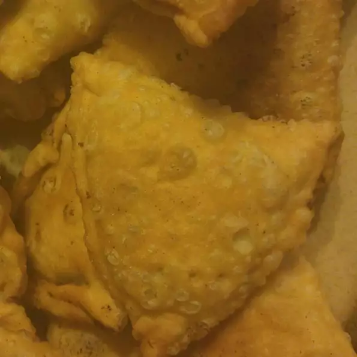

Samosa

Description
These stuffed savory pastries are a traditional Indian favorite. Lamb meat and spices are cooked together to create a mouthwatering filling for the easy to make dough. The recipe may seem complex, but it's actually fairly simple. Enjoy!
Ingredients
- ½ teaspoon salt
- 2 tablespoons butter
- ¼ cup water
- 1 quart oil for deep frying
- 2 tablespoons butter
- 1 small onion, chopped
- 2 cloves garlic, chopped
- 2 green chile peppers, chopped
- 1 tablespoon fresh ginger root, chopped
- ½ teaspoon ground turmeric
- ½ teaspoon chili powder
- ¾ pound ground lamb
- 1 teaspoon salt
- 2 teaspoons garam masala
- 1½ tablespoons fresh lemon juice
Directions
- Step 1 : In a medium bowl, mix flour, salt and butter until the mixture resembles fine bread crumbs. Pour in water, using more (up to approximately 1/4 cup) if necessary to make a smooth dough. Pat into a ball. Place on a lightly floured surface and knead 10 minutes, or until dough is smooth and elastic. Return to the bowl, cover and set aside.
- Step 2 : Heat oil in a large, deep skillet to 375 degrees F (190 degrees C).
- Step 3 : Melt butter in a medium saucepan over medium high heat. Stir in onion, garlic, green chile peppers and ginger. Cook 5 minutes, or until onions are golden brown. Stir in turmeric, chili powder, ground lamb and salt. Cook until the lamb meat is evenly brown, about 10 minutes. Stir in garam masala and lemon juice. Continue cooking 5 minutes, then remove from heat.
- Step 4 : Divide dough into 15 equal portions. Roll portions into balls, then flatten into 4 inch circles. Cut each circle in half. Dampen edges and form semicircles into cones. Fill cones with equal portions of the lamb meat mixture. Dampen top and bottom edges of cones, and pinch to seal.
- Step 5 : Carefully lower cones into preheated oil a few at a time. Fry until golden brown, 2 to 3 minutes. Drain on paper towels. Serve warm.